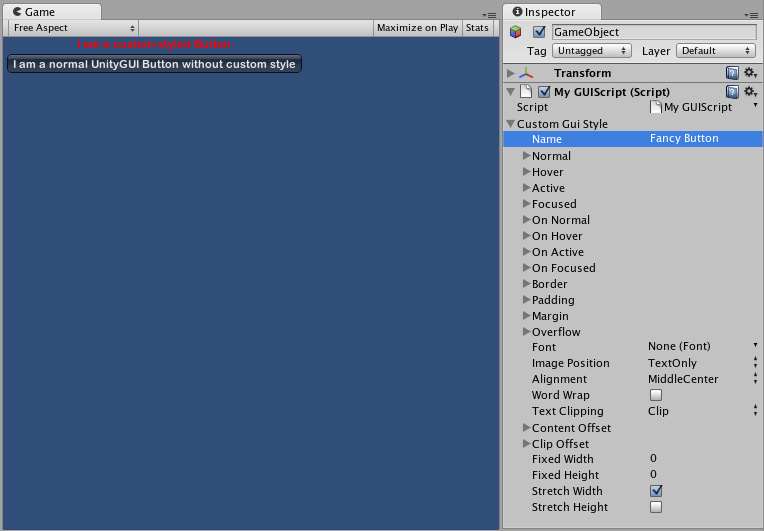

GUI Style (IMGUI System)
GUI Styles are a collection of custom attributes for use with UnityGUI. A single GUI Style defines the appearance of a single UnityGUI Control.

If you want to add style to more than one control, use a GUI Skin instead of a GUI Style. For more information about UnityGUI, please read the GUI Scripting Guide.
Please Note: This page refers to part of the IMGUI system, which is a scripting-only UI system. Unity has a full GameObject-based UI system which you may prefer to use. It allows you to design and edit user interface elements as visible objects in the scene view. See the UI System Manual for more information.
Properties
| Property: | Function: |
|---|---|
| Name | The text string that can be used to refer to this specific Style |
| Normal | Background image & Text Color of the Control in default state |
| Hover | Background image & Text Color when the mouse is positioned over the Control |
| Active | Background image & Text Color when the mouse is actively clicking the Control |
| Focused | Background image & Text Color when the Control has keyboard focus |
| On Normal | Background image & Text Color of the Control in enabled state |
| On Hover | Background image & Text Color when the mouse is positioned over the enabled Control |
| On Active | Properties when the mouse is actively clicking the enabled Control |
| On Focused | Background image & Text Color when the enabled Control has keyboard focus |
| Border | Number of pixels on each side of the Background image that are not affected by the scale of the Control' shape |
| Padding | Space in pixels from each edge of the Control to the start of its contents. |
| Margin | The margins between elements rendered in this style and any other GUI Controls. |
| Overflow | Extra space to be added to the background image. |
| Font | The Font used for all text in this style |
| Image Position | The way the background image and text are combined. |
| Alignment | Standard text alignment options. |
| Word Wrap | If enabled, text that reaches the boundaries of the Control will wrap around to the next line |
| Text Clipping | If Word Wrap is enabled, choose how to handle text that exceeds the boundaries of the Control |
| Overflow | Any text that exceeds the Control boundaries will continue beyond the boundaries |
| Clip | Any text that exceeds the Control boundaries will be hidden |
| Content Offset | Number of pixels along X and Y axes that the Content will be displaced in addition to all other properties |
| X | Left/Right Offset |
| Y | Up/Down Offset |
| Fixed Width | Number of pixels for the width of the Control, which will override any provided Rect() value |
| Fixed Height | Number of pixels for the height of the Control, which will override any provided Rect() value |
| Stretch Width | If enabled, Controls using this style can be stretched horizontally for a better layout. |
| Stretch Height | If enabled, Controls using this style can be stretched vertically for a better layout. |
Details
GUIStyles are declared from scripts and modified on a per-instance basis. If you want to use a single or few Controls with a custom Style, you can declare this custom Style in the script and provide the Style as an argument of the Control function. This will make these Controls appear with the Style that you define.
First, you must declare a GUI Style from within a script.
/* Declare a GUI Style */
var customGuiStyle : GUIStyle;
...
When you attach this script to a GameObject, you will see the custom Style available to modify in the Inspector.

Now, when you want to tell a particular Control to use this Style, you provide the name of the Style as the last argument in the Control function.
...
function OnGUI () {
// Provide the name of the Style as the final argument to use it
GUILayout.Button ("I am a custom-styled Button", customGuiStyle);
// If you do not want to apply the Style, do not provide the name
GUILayout.Button ("I am a normal UnityGUI Button without custom style");
}

For more information about using UnityGUI, please read the GUI Scripting Guide.